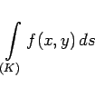
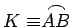
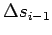
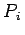

Kurvenintegral 1. Art oder Integral über eine Bogenlänge wird das bestimmte Integral
|  | (8.106) |
genannt, wobei u = f(x,y) eine in einem zusammenhängenden Gebiet definierte Funktion von zwei Veränderlichen ist und die Integration über den Kurvenbogen  einer ebenen, durch ihre Gleichung vorgegebenen Kurve durchgeführt wird. Das betreffende Bogenstück liegt in dem gleichen Gebiet und wird Integrationsweg genannt. Der Zahlenwert des Kurvenintegrals 1. Art wird auf die folgende Weise ermittelt (s. Abbildung).
für den Fall, daß die Länge jedes Elementarbogenstückes  gegen Null geht, also n gegen  .
.
Wenn der Grenzwert von (8.107a) existiert und unabhängig ist von der Wahl der Punkte Ai und , so wird er Kurvenintegral 1. Art genannt, und man schreibt
In Analogie dazu wird das Kurvenintegral 1. Art für eine Funktion u = f(x,y,z) von drei Veränderlichen definiert, dessen Integrationsweg das Bogenstück einer Raumkurve ist: